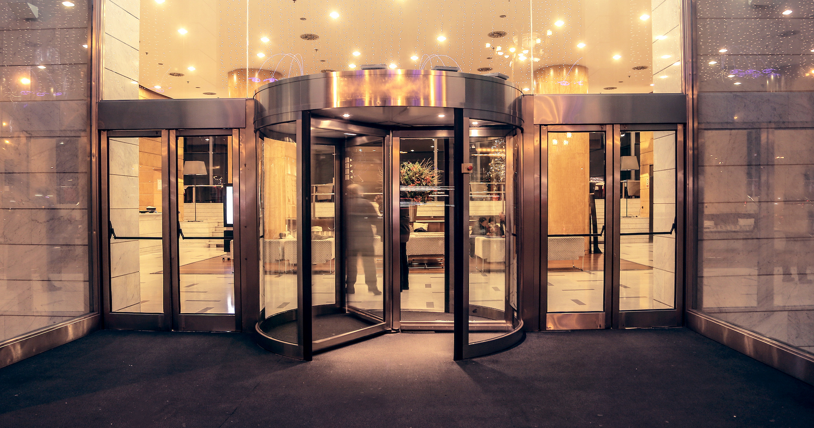

Входная группа обеспечивает защиту от сквозняков, холода, проникновения осадков. Она создает буферную зону и снижает расходы на обогрев.
Это архитектурная конструкция для оформления, утепления входа в здание, которая должна отвечать ряду требований:
быть эстетичной, дополняя фасадное оформление;
обеспечивать хорошую звуко-, теплоизоляцию;
сохранять первозданный вид на протяжении всего срока службы.
Все наши изделия соответствуют этим параметрам, поскольку произведены из качественных материалов.
